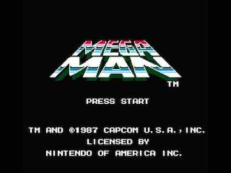

This is the main walkthrough section of the website. You can play through the levels in the order suggested in the table of contents below; there will be buttons at the bottom of each section to take you to the next and previous parts. Alternatively, you can click on one of the levels in the table if you need help with a specific level.
Table of Contents
A) Getting Started
Level Select
When you first boot up the game, you'll be greeted with the game's title screen, showing a shiny metallic logo displayed against a pitch black background. Press the start button, as the game suggests, and you'll already find yourself on the blue level select screen. Yes, Mega Man 1 allows you to choose the order in which you wish to play through these levels, with the exception of the final group of levels which will unlock after you clear these first six. It's completely up to you to decide which order you'd like to tackle things in, however there is a recommended order which makes things a lot easier, especially for new players, and this guide will be using that order. With that said, go ahead and select Guts Man and let's begin! (Strangely, there are no spaces used in the robot masters' names.)
Controls
Being a thirty-year old platformer, there are only a small number of controls which you need to acquaint yourself with, and even for inexperienced players it shouldn't take you long to get the gist of things. Below is a small table demonstrating which buttons to press for the basic controls across different iterations of the game. Note that some newer versions may have some extra abilities added, but this will only mention the core controls for the sake of all players' convenience.
| Action | NES | Switch | PS4 | iPhone | Xbox One | Wii Virtual Console |
|---|---|---|---|---|---|---|
| Jump | A | B | X | Touch screen | A | 2 |
| Shoot | B | Y | Square | Touch screen | X | 1 |
| Move | D-pad | D-pad/L stick | D-pad/L stick | Touch screen | D-pad/L stick | D-pad |
| Open weapon screen | Start | + | Options | Touch screen | View button | + |
| Pause | Select | - | Touch pad | Touch screen | Menu button | - |